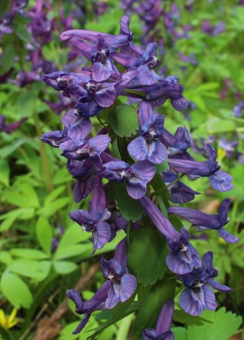
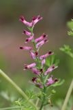
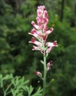

|

Клубень небольшой. Кисть довольно плотная, цилиндрическая; прицветники клиновидно обратно-яйцевидные,
спереди надрезанные на линейные доли или зубчатые; цветоножки нитевидные, нижние почти равные прицветникам,
до 10 мм длиной, верхние короче; чашелистики. очень мелкие, незаметные; венчики розово-фиолетовые, 15—20 мм длиной,
отгиб наружных лепестков довольно широкий, на верхушке широко выемчатый, в выемке без зубца;
нижний лепесток с заметным бугром при основании; шпора почти прямая или чаще слегка дуговидно вниз согнутая, тупая,
равная лепесткам или слегка длиннее их, средне толстая; коробочки поникающие или отклоненные, продолговатые, 10-12 мм длиной,
3-4 мм шириной, на верхушке заострённые в носик, постепенно переходящий в стлб.; рыльце дисковидное,
по краю мелко бородавчато-зубчатое; семена черные, блестящие, без точечности, около 2 мм диаметром, карункула узко-лентовидная,
пленчатая, отстоящая, не длинная
Фотограф: Владимир Саенко |

Растение сизого цвета, покрытое восковым налетом, со стержневым корнем. Стебель голый, простертый,
восходящий или прямостоячий, ветвистый, высотой до 30 см, слегка бороздчатый, иногда с красноватым налетом.
Семядоли тонкие, длинные, линейные, заостренные спереди; гипокотиль светло-красный. Листья нежные, черешчатые,
перистые, дланевидно-рассеченные, дольки тоже черешчатые. Цветок зигоморфный, удлиненный, 7-9 мм в длину, узкий,
розово-фиолетовый, верхушка венчика от темно-красного до черного цвета, цветки собраны в многоцветковые прямостоячие кисти.
Плоды - односемянные орешки около 2 мм в диаметре, округлые, на верхушке сильно вдавленные, от соломенно-желтых и
зеленовато-серых до серовато-коричневых и коричневых, матовые. Семена овальные, шероховатые, красновато-коричневые.
Цветет в мае-июне, плодоносит в июле-августе. Максимальная плодовитость одного растения до 15 000 семян.
Семена сохраняют всхожесть в почве в течение 3-5 лет. Семена прорастают при низких температурах, оптимальная
температура прорастания 18-20°С.
Фотограф: Евгений Давкаев |
|

Стебели 10—30 см высотой, от основания ветвистый, почти прямостоячие или наклоненные, обычно удлиненные, стройные;
листья сизые, дважды-трижды перисто-рассеченные, с плоскими короткими линейными или нитевидными дольками.
Кисти редкие, удлиненные, с многими цветками, на тонких ножках в 1—1.5 см длиной; цветоножки и плодоножки тонкие,
2.5—4 мм длиной, в 2—3 раза длиннее укороченных прицветников; венчик розово-фиолетовый, тонкий, 5—6 мм длиной,
с темным пятном на верхупже; верхний лепесток тупой, но не выемчатый, края его узкие, резко загнутые кверху;
шпора довольно тонкая, вниз загнутая, в 2 раза короче лепестка; чашелистики очень мелкие, меньше 1 мм длиной,
узкие, рано опадающие; орешек округлый, сжатый с боков, с ясным килем, на верхушке с маленьким ясным остроконечием,
под лупой очень мелко точечно-бугорчатый, около 2 мм длиной.
Фотограф: Виктор Колесников |